Have you noticed the pictures given above?
What did Keerti get for watering the garden?
•
Keerti's parents give her toffees as a reward for watering the garden
at home regularly.
Tejas is gifted a story book by his parents for folding the clothes
regularly at home.
3
Diverse Employments
Page 40

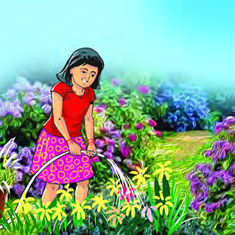
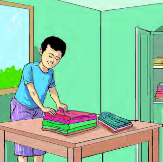
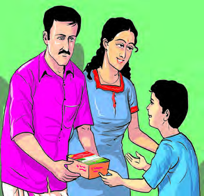
Page 41
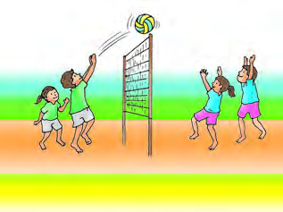

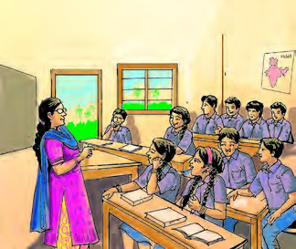
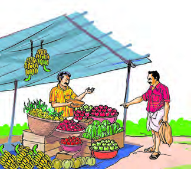
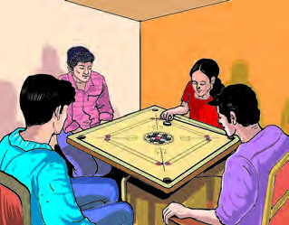
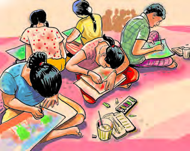
41
Diverse Employments
How did Tejas’s parents appreciate him for folding clothes?
•
What do the elders in your home get in return for the work they do?
Income
Observe the images.
Page 42

42
Social Science Class V
Hope you have observed the pictures of people involved in different
activities. Which are the activities that each one is involved in?
• Trade
•
•
•
•
•
Which among these activities are rewarded in the form of money?
•
Teaching
•
•
Which activities are rewarded with gifts?
•
•
•
Some of our actions get rewards and some get gifts. For activities such as
teaching, trading and healthcare, individuals receive money as reward.
Income is the money received by a person over a period of time as a
result of engaging in various economic activities. Find out the other
activities that are rewarded with money.
Employment
Read this poem.
ചോxോദ്യംDZം:
പഠിപ്പു തീർന്നാൽ, പ്പള്ിക്കൂടം
വിട്ടുുകഴിഞ്ഞെന്നാൽ,
പറയുുക പറയുുക, പിന്നീടെന്്ത
തൊരുു,
പണിക്കുു പോ�ോകുും നീ?
*
* * *
*
*
ഉത്തരം :
ഒന്നാമൻ :
കൃഷിക്കുു പോ�ോകുും, കൃഷിക്കുു പോ�ോകുും,
കൃഷിക്കുു പോ�ോകുും ഞാൻ,
കൃഷിക്കുു, നമ്മുടെ പിതാക്കൾ ചെയ്്്തതൊരുു
തൊ�ൊഴില്ക്കുു, പോ�ോകുും ഞാൻ.
*
* * *
*
*
രണ്ടാമൻ :
പണം മുുടക്കിക്്കകോടികണക്ിനുു
കച്ചവടത്തിനായ്,
എൻ.വി.കൃഷ്ണവാരിയർ
പഠിപ്പു തീർന്ാൽ
തുുനിഞ്ഞിടുും ഞാൻ ; തൊ�ൊഴിലിതിൽ
നല്ലതുു വേറൊ�ൊന്നുുണ്ടാമോ�ോ?
*
* * *
*
*
മൂൂന്നാമൻ :
നാട്ിലശിക്ിതരായലയുന്ന
ശിശുക്കളെയെല്്ലാാം ഞാൻ
കൂൂട്ി, മികച്്ചചൊരുു വിദ്്യയാനിലയന-
മാരംഭിച്ചീടുും.
*
* * *
*
*
നാലാമൻ :
പഠിപ്പു തീർന്നാൽ പട്ടാളത്തിത്തിൽ -
പ്്പപോയിച്ചേരുും ഞാൻ ;
പടനായകനായ്ബ് ഭാരതരാജ്്യയം
പരിപാലിക്്കുുംും ഞാൻ.
*
* * *
*
*
Page 43

43
Diverse Employments
Employment is the work done by a person physically or intellectually for
income. It's reward is paid in the form of wages or salary. Employement is the
main source of income for individuals.
List out the employments of the members of your family.
Members
Employment
•
•
•
Is it only physical work that humans do?
Who are the members of your family that engage in income generating
activities?
Wages and Salary
Wages is paid by the employer to the employee for performing
services under a contract. Wages is fixed on hourly or daily basis.
But, salary is the remuneration paid by the employer for the work performed
by the employees on a monthly basis.
In this poem, the poet hints at the various types of employment we
choose after studies. What are the jobs mentioned in these lines?
•
Agriculture
•
•
What employment do you wish to do in future?
Page 44

44
Social Science Class V
Sources of Income
People around us earn income
through
different
sources.
They
get
income
from
agriculture, business, bank
deposits and other assets.
Labour
or
property
that
generates such income is
called sources of income.
Assets
Assets are the financial resources
in different forms. Buildings and property
are examples of assets.
Employment
...................
...................
Bank
Investments
...................
Sources of
income
Complete the diagram illustrating the various sources of income.
Page 45
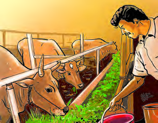
45
Diverse Employments
Observe the list of income from various sources given below.
Sources of income
Income
Agriculture
Crop
Employment
Wages/Salary
Business
Profit
Bank Deposit
Interest
Assets
Rent/Lease
Stock Investment
Profit Share/Divident
Individual Income and Family Income
Just as the sources of income which are different, income from such
sources also varies. An individual can earn income from many sources.
For example, a farmer’s personal income can be from the interest incurred
from bank deposits, profit from agricultural related business, etc. Thus,
a person gets income through employment and other means. Personal
income is the total income received by a person from various sources of
income during a particular period. You have discussed your family's
various sources of income, haven’t you?
Thus, family income is the income
received by all the members of a family
during a certain period.
Different Employments
Observe the pictures.
Observe your
surroundings and list
out various sources
of income and the
income from them.
Organise a discussion in your classroom on the different sources
of income in your family.
ST-299-4-SOC. SCI.(E)-5-VOL-1
Page 46

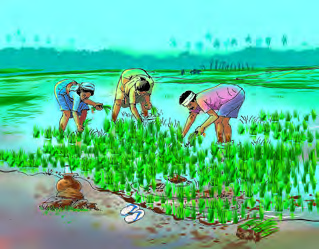
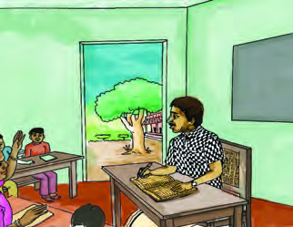
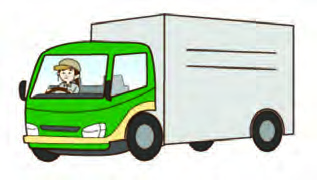
46
Social Science Class V
Agricultural Employments
Agricultural employment is the work
done using the natural resources such
as cultivation of plants for food and
fiber production, animal husbandry
and pisciculture, etc. Agriculture plays
an important role in Indian economy.
46.5 percent of the total workforce in
India is engaged in agriculture and
related activities. (Economic Review:
2022-23)
Non-agricultural Employments
All kinds of employments that are not
included in agricultural employments
can be considered as non-agricultural
employments. Different types of
services and employments related
to industrial production are non-
agricultural employments. Examples
of non-agricultural employments
include manufacturing of clothes,
construction, business, banking,
teaching, transportation and work
in the factory.
Look at the pictures given above.
What employments are seen in the picture?
•
Teaching
•
•
•
What are the activities that are carried out by the Agriculture Club of
your school? Make notes.
•
•
Page 47
47
Diverse Employments
Complete the table given below by classifying the employments
found in your surroundings into agricultural and non-agricultural.
Agricultural Employments Non-agricultural Employments
•
Cultivation of rice
•
Pisciculture
•
•
•
•
Business
•
Building construction
•
•
•
Sibi’s parents run a pickle unit called ‘Star Pickles’. They
started this employment initiative with the help of the
government in a situation where there was no employment
of their own, and now it is moving ahead profitably. Around
ten families are getting employment through this initiative apart
from being a source of income for Sibi's family.
Self-Employment
Have you read the note? Have you noticed such ventures that are run
by individuals and groups?
Self-employment means earning a livelihood through independent
economic activity without being under the control of any employer.
Self-employed persons have their own enterprise and at the same time
carry out all the responsibilities of an employee. In self-employment
initiatives individuals mostly manage their enterprise alone. Self-
employed entrepreneurs are the sole beneficiaries of the income derived
from it. Don't you see grocery shops, tailoring shops, bakeries, etc. run
by individuals or groups in your area? These are examples of self-
employment ventures. Find out some other examples as well.
Page 48
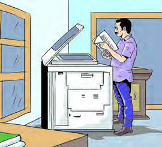
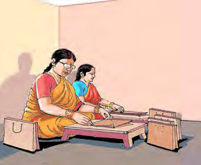
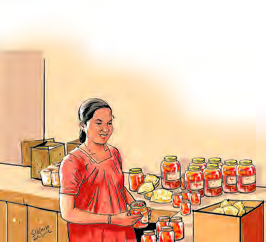

48
Social Science Class V
A)........................................
C)........................................
B)........................................
D)........................................
Self-Employment Schemes
Beneficiaries
•
Navajeevan Project
•
Kaivalya
•
Saranya
•
•
Senior citizens
•
People with disabilities
•
Women
•
Observe the pictures given below and write down the types of job
they are related to.
Write down the characteristics of self-employed enterprises.
•
Individuals can earn through self-employment without depending on others.
•
•
Self-employment plays a major role in the economic growth of the
country. The Government implements various schemes to promote self-
employment initiatives.
Given below are the experiences of some people who have achieved
success through self-employment.
Page 49

49
Diverse Employments
1 As part of Social Science Club activities interview the farmers in your
neighbourhood and prepare a brief description of the variety of agricultural
employments.
2 Prepare a video about different employments around your locality with
the help of your teacher and present it to the class.
3 Interview entrepreneurs in your area. Prepare questions for the interview
with the help of the teacher.
4. Visiting a self-employment venture in your area and observe the activities
there. Make notes.
5. Present a seminar by collecting information on the changes in the field
of employment in Kerala society.
6. Prepare a project on government schemes promoting self-employment
and present it in the Social Science Club.
Snack Manufacturing Started in Make Shift Shed of a House
Anu, born in a family of farmers in Malappuram district started her self-employment
venture at her own home. She made necessary facilities in the make shift shed
of her house, and made and sold common snacks. Gradually the demand for her
products increased. At present, about 60 types of snacks are manufactured and
sold here. Her business has scaled to almost 11 crore rupees a year now.
A Homemaker Earning Rs 50,000 per Month
Sajitha is a successful entrepreneur who converted her hobby of painting to a
profit-making business. Her business is fabric painting. She beautifully paints on
sarees, shirts, churidars and children's wear. She successfully developed fabric
painting from a hobby into a business. Currently, she earns Rs 50,000 per month.
Have you noticed the examples given above?
If you have confidence and the will to work, you can engage in various
employments and achieve success in life. Every employment has its
own glory. Everyone has the right to choose the employment of their
choice according to their level of education and aptitude. Employments
play an important role in determining the socio-economic progress of a
country.
Extended Activities